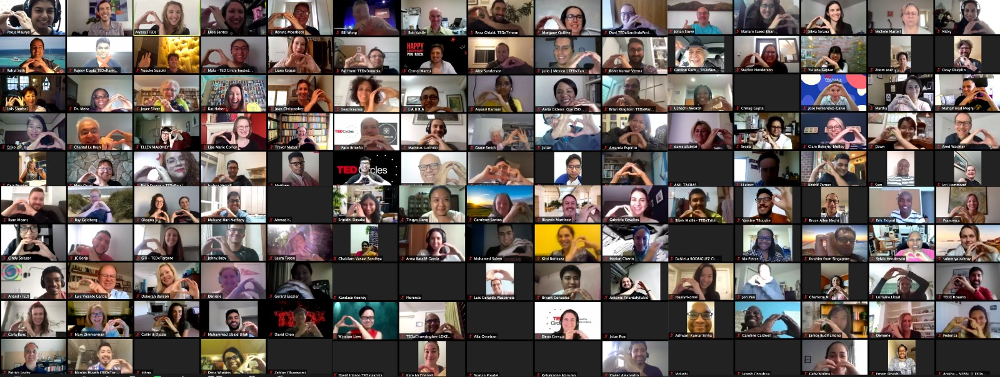
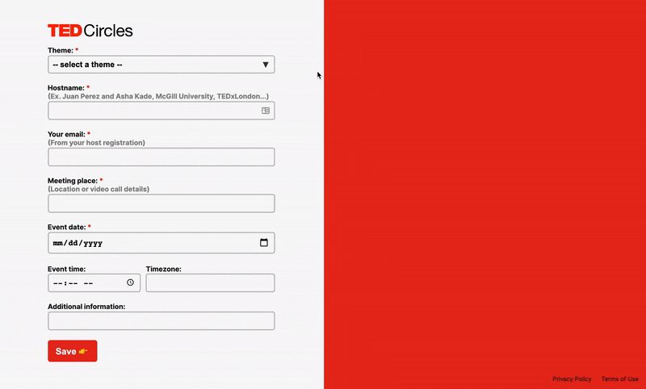

TED Circles Event Generator
May 2020 - Nov 2020
Role
Designer
Developer
Tools
Figma
HTML/CSS/JS
Airtable API
Netlify
Team
Alyssa Hampton
Peter Maccario
Fun Fact
Over 2000 event invitations have been created in the few months since launch!
Taking an iterative approach to designing and launching tools for TED's global Circles community of over 10,000 participants.
